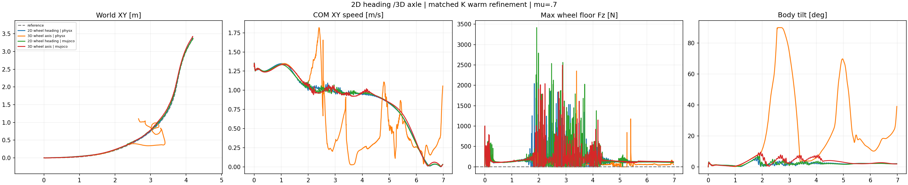

FAIL across the required nominal engines. The new actor falls and departs in PhysX;its MuJoCo transfer remains upright and tracks the turn but still fails contact continuity and the angular-HF gate. This result is not adopted as a successful controller. No new friction sweep is started.
| Cell | Core XY RMSE(m) | Speed/reference | Beta RMSE(deg) | Any-wheel support(%) | Max gap(ms) | HF/original | Failed checks/9 |
|---|---|---|---|---|---|---|---|
| 2D wheel heading | physx | 0.0658 | 0.993 | 1.78 | 85.52 | 52.5 | 0.518 | 2 |
| 3D wheel axis | physx | 0.5676 | 0.714 | 81.78 | 82.61 | 882.5 | 0.404 | 8 |
| 2D wheel heading | mujoco | 0.0803 | 0.990 | 1.93 | 85.88 | 52.5 | 0.660 | 2 |
| 3D wheel axis | mujoco | 0.0772 | 0.987 | 2.22 | 89.38 | 55.0 | 0.716 | 3 |
Core1.44–4.00s;support0.02–6.96s at every2.5ms physical sample,at least one wheel's measured upward floor-normal force strictly above5N. One wheel may lift. All nine original gates remain:core/whole XY RMSE≤0.15m and peak≤0.30m;core speed ratio0.95–1.10;nonzero-beta RMSE≤10deg;angular-XY10–100Hz RMS≤0.7 of the original same-engine PPO;100% any-wheel support and zero longest gap. No absolute-height or camber acceptance gate is added.

The control is the preceding task-space K refinement. Both actors start independently from the same original K checkpoint8cb011e4c5e2a33a685bc58280df410141ab99aa245892042762b8956595fe5a with identical actor,critic and normalizer tensors. Both use fresh Adam,fixed learning rate0.0001,clip0.1,and512×24×200=2,457,600 additional transitions;each has14,745,600 cumulative transitions. This is warm refinement,not scratch learning.
Only motion_body_ori changes:projected2D axial wheel-plane heading becomes the3D world axle direction,using theta=atan2(norm(cross(axis_ref,axis)),abs(dot(axis_ref,axis))) and exp(−mean_two_wheels(theta²)/0.4²). Wheel spin and axle sign remain irrelevant. Root orientation,nonzero beta,all15 reward weights,other14 reward definitions,contact formula,free-height treatment,DR,actuators,observations and reference are unchanged. No slip reward or camber-command reference is installed in this ablation.
PhysX first records postinitial nonwheel-ground force above5N at2.55s and reaches about90deg body tilt. At3.00s the body is almost sideways with wheels above it;later it is low and off the route. Lower angular HF after this fall is not stable turning. In MuJoCo,no postinitial nonwheel-ground force above5N is recorded and inspected poses remain upright,but support gaps reach55ms and HF/original0.716 exceeds0.7. The same new normalized actor9604d4e75b176cbfb4c8812f9ced900c360ccb984f5325c90be1e1e81425b9cc is used in both engines. The initial PhysX nonwheel sample is separately recorded and not counted as a postinitial collision.
Native smoke,strict independent CPU checkpoint/export proof,formal refinement and both full-horizon evaluations completed. Training/source provenance retains the12 recorded CPU tests. All74 collected files were rehashed;all43 executed source/config/test copies match local bytes. All350 video frames decode and the fixed relative camera is verified. Original opaque poses are selected at50Hz from2793 native400Hz states;there is no interpolation,height correction or new physics. Stills2.24/3.00/4.00/6.96s and the native metrics plot were inspected;full manual playback is not claimed. All exact owned remote process handles are terminal and final actor bytes were rehashed. No model weights,assets or credentials are collected.
Metrics and matched identity checks · Native nonwheel forces and loaded-point slip · Collection manifest · Replay verification · Still review · Final process check · Protocol · Trainer · Analyzer.
This single-seed result cannot prove3D orientation tracking is generally ineffective or attribute engine differences to one solver parameter. The subsequent independent-camber kinematic reference generator is a separate intervention,not evidence that this actor learned controlled camber or stable sliding.